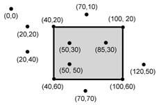
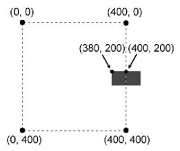
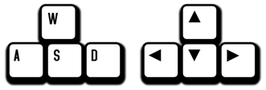

|
|
Capítulo 18 |
Detección de Colisiones Y Entradas de Teclado/Ratón |

Temas Tratados En Este Capítulo:
· Detección de Colisiones
· No Modifiques una Lista Mientras Iteras Sobre Ella
· Entrada de Teclado en Pygame
· Entrada de Ratón en Pygame
Detección de colisiones es darse cuenta cuando dos cosas en la pantalla se han tocado (es decir, han colisionado). Por ejemplo, si el jugador toca un enemigo puede perder salud. O quizá el programa necesita saber cuando el jugador toca una moneda para recogerla automáticamente. Detección de colisiones puede ayudar a determinar si el personaje del juego está parado sobre el suelo o si no hay nada más que aire debajo de él.
En nuestros juegos, la detección de colisiones determinará si dos rectángulos se superponen o no. Nuestro próximo programa de ejemplo cubrirá esta técnica básica.
Más adelante en este capítulo, veremos cómo nuestros programas Pygame pueden recibir entradas del usuario a través del teclado o del ratón. Es un poco más complicado que llamar a la función input() como hicimos para nuestros programas de texto. Pero usar el teclado es mucho más interactivo en programas GUI. Y usar el ratón ni siquiera es posible en nuestros juegos de texto. Estos dos conceptos harán que tus juegos sean mucho más emocionantes.
Código Fuente del Programa de Detección de Colisiones
Gran parte de este código es similar al programa de animación, de modo que omitiremos la explicación del movimiento y los rebotes. (Ve el programa de animación en el Capítulo 17 para esta explicación). Un rebotín rebotará contra los bordes de la ventana. Una lista de objetos Rect representará cuadrados de comida.
En cada interacción durante el bucle del juego, el programa leerá cada objeto Rect en la lista y dibujará un cuadrado verde en la ventana. Cada cuarenta iteraciones del bucle del juego agregaremos un nuevo objeto Rect a la lista de modo que aparezcan constantemente nuevos cuadrados de comida en la pantalla.
El rebotín es representado por un diccionario. El diccionario tiene una clave llamada 'rect' (cuyo valor es un objeto pygame.Rect) y una clave llamada 'dir' (cuyo valor es una de las variables constantes de dirección como en el programa de Animación del capítulo anterior).
A medida que el rebotín rebota por la ventana, comprobamos si colisiona con alguno de los cuadrados de comida. Si es así, borramos ese cuadrado de comida de modo que ya no sea dibujado en la pantalla. Esto dará la impresión de que el rebotín “se come” los cuadrados de comida en la ventana.
Escribe lo siguiente en un nuevo archivo y guárdalo como detecciónColisión.py. Si obtienes errores después de haber copiado el código, compara el código que has escrito con el código del libro usando la herramienta online diff en http://invpy.com/es/diff/deteccionColision.
detecciónColisión.py
1. import pygame, sys, random
2. from pygame.locals import *
3.
4. def verifSuperposiciónRects(rect1, rect2):
5. for a, b in [(rect1, rect2), (rect2, rect1)]:
6. # Verifica si las esquinas de a se encuentran dentro de b
7. if ((puntoDentroDeRect(a.left, a.top, b)) or
8. (puntoDentroDeRect(a.left, a.bottom, b)) or
9. (puntoDentroDeRect(a.right, a.top, b)) or
10. (puntoDentroDeRect(a.right, a.bottom, b))):
11. return True
12.
13. return False
14.
15. def puntoDentroDeRect(x, y, rect):
16. if (x > rect.left) and (x < rect.right) and (y > rect.top) and (y < rect.bottom):
17. return True
18. else:
19. return False
20.
21.
22. # establece el juego
23. pygame.init()
24. relojPrincipal = pygame.time.Clock()
25.
26. # establece la ventana
27. ANCHOVENTANA = 400
28. ALTOVENTANA = 400
29. superficieVentana = pygame.display.set_mode((ANCHOVENTANA, ALTOVENTANA), 0, 32)
30. pygame.display.set_caption('Deteccion de Colisiones')
31.
32. # establece las variables de dirección
33. ABAJOIZQUIERDA = 1
34. ABAJODERECHA = 3
35. ARRIBAIZQUIERDA = 7
36. ARRIBADERECHA = 9
37.
38. VELOCIDADMOVIMIENTO = 4
39.
40. # establece los colores
41. NEGRO = (0, 0, 0)
42. VERDE = (0, 255, 0)
43. BLANCO = (255, 255, 255)
44.
45. # establece las estructuras de datos de comida y rebotín
46. contadorComida = 0
47. NUEVACOMIDA = 40
48. TAMAÑOCOMIDA = 20
49. rebotín = {'rect':pygame.Rect(300, 100, 50, 50), 'dir':ARRIBAIZQUIERDA}
50. comidas = []
51. for i in range(20):
52. comidas.append(pygame.Rect(random.randint(0, ANCHOVENTANA - TAMAÑOCOMIDA), random.randint(0, ALTOVENTANA - TAMAÑOCOMIDA), TAMAÑOCOMIDA, TAMAÑOCOMIDA))
53.
54. # corre el bucle de juego
55. while True:
56. # busca un evento QUIT
57. for evento in pygame.event.get():
58. if evento.type == QUIT:
59. pygame.quit()
60. sys.exit()
61.
62. contadorComida += 1
63. if contadorComida >= NUEVACOMIDA:
64. # añade nueva comida
65. contadorComida = 0
66. comidas.append(pygame.Rect(random.randint(0, ANCHOVENTANA - TAMAÑOCOMIDA), random.randint(0, ALTOVENTANA - TAMAÑOCOMIDA), TAMAÑOCOMIDA, TAMAÑOCOMIDA))
67.
68. # Dibuja el fondo NEGRO sobre la superficie
69. superficieVentana.fill(NEGRO)
70.
71. # Mueve la estructura de datos rebotín
72. if rebotín['dir'] == ABAJOIZQUIERDA:
73. rebotín['rect'].left -= VELOCIDADMOVIMIENTO
74. rebotín['rect'].top += VELOCIDADMOVIMIENTO
75. if rebotín['dir'] == ABAJODERECHA:
76. rebotín['rect'].left += VELOCIDADMOVIMIENTO
77. rebotín['rect'].top += VELOCIDADMOVIMIENTO
78. if rebotín['dir'] == ARRIBAIZQUIERDA:
79. rebotín['rect'].left -= VELOCIDADMOVIMIENTO
80. rebotín['rect'].top -= VELOCIDADMOVIMIENTO
81. if rebotín['dir'] == ARRIBADERECHA:
82. rebotín['rect'].left += VELOCIDADMOVIMIENTO
83. rebotín['rect'].top -= VELOCIDADMOVIMIENTO
84.
85. # Verifica si rebotín se movió fuera de la ventana
86. if rebotín['rect'].top < 0:
87. # rebotín se movió por arriba de la ventana
88. if rebotín['dir'] == ARRIBAIZQUIERDA:
89. rebotín['dir'] = ABAJOIZQUIERDA
90. if rebotín['dir'] == ARRIBADERECHA:
91. rebotín['dir'] = ABAJODERECHA
92. if rebotín['rect'].bottom > ALTOVENTANA:
93. # rebotín se movió por debajo de la ventana
94. if rebotín['dir'] == ABAJOIZQUIERDA:
95. rebotín['dir'] = ARRIBAIZQUIERDA
96. if rebotín['dir'] == ABAJODERECHA:
97. rebotín['dir'] = ARRIBADERECHA
98. if rebotín['rect'].left < 0:
99. # rebotín se movió por la izquierda de la ventana
100. if rebotín['dir'] == ABAJOIZQUIERDA:
101. rebotín['dir'] = ABAJODERECHA
102. if rebotín['dir'] == ARRIBAIZQUIERDA:
103. rebotín['dir'] = ARRIBADERECHA
104. if rebotín['rect'].right > ANCHOVENTANA:
105. # rebotín se movió por la derecha de la ventana
106. if rebotín['dir'] == ABAJODERECHA:
107. rebotín['dir'] = ABAJOIZQUIERDA
108. if rebotín['dir'] == ARRIBADERECHA:
109. rebotín['dir'] = ARRIBAIZQUIERDA
110.
111. # Dibuja a rebotín en la superficie
112. pygame.draw.rect(superficieVentana, BLANCO, rebotín['rect'])
113.
114. # Verifica si rebotín intersectó algun cuadrado de comida
115. for comida in comida[:]:
116. if verifSuperposiciónRects(rebotín['rect'], comida):
117. comidas.remove(comida)
118.
119. # Dibuja la comida
120. for i in range(len(comidas)):
121. pygame.draw.rect(superficieVentana, VERDE, comidas[i])
122.
123. # Dibuja la ventana en la pantalla
124. pygame.display.update()
125. relojPrincipal.tick(40)
El programa se verá como la Figura 18-1. El cuadrado rebotín irá rebotando por toda la pantalla. Al colisionar con los cuadrados de comida verdes estos desaparecerán de la pantalla.

Figura 18-1: Una captura de pantalla alterada del programa Detección de Colisiones.
Importando los Módulos
1. import pygame, sys, random
2. from pygame.locals import *
El programa de detección de colisiones importa las mismas cosas que el programa de animación del capítulo anterior, junto con el módulo random.
El Algoritmo de Detección de Colisiones
4. def verifSuperposiciónRects(rect1, rect2):
Para detectar colisiones, necesitas una función que pueda determinar si dos rectángulos se superponen o no. La Figura 18-2 muestra ejemplos de rectángulos superpuestos y no superpuestos.

Figura 18-2: Ejemplos de rectángulos que colisionan (izquierda) y rectángulos que no colisionan (derecha).
verifSuperposiciónRects() recibe dos objetos pygame.Rect. La función devuelve True si colisionan y False si no lo hacen. Hay una regla simple a seguir para determinar si los rectángulos colisionan. Mira cada una de las cuatro esquinas de ambos rectángulos. Si al menos una de estas ocho esquinas está dentro del otro rectángulo, quiere decir que los rectángulos han colisionado. Podemos usar esto para determinar si verifSuperposiciónRects() debe devolver True o False.
5. for a, b in [(rect1, rect2), (rect2, rect1)]:
6. # Verifica si las esquinas de a se encuentran dentro de b
7. if ((puntoDentroDeRect(a.left, a.top, b)) or
8. (puntoDentroDeRect(a.left, a.bottom, b)) or
9. (puntoDentroDeRect(a.right, a.top, b)) or
10. (puntoDentroDeRect(a.right, a.bottom, b))):
11. return True
Las líneas 5 a 11 comprueban si las esquinas de un rectángulo están dentro del otro. Más tarde, crearemos una función llamada puntoDentroDeRect() que devuelve True si las coordenadas XY del punto está dentro del rectángulo. Llamaremos a esta función para cada una de las ocho esquinas, y si alguna de estas llamadas devuelve True, los operadores or harán que toda la condición sea True.
Los parámetros de verifSuperposiciónRects() son rect1 y rect2. Primero comprueba si las esquinas de rect1 están dentro de rect2, y después si las esquinas de rect2 están dentro de rect1.
No necesitas repetir para rect1 y rect2 el código que comprueba las cuatro esquinas. En cambio, puedes usar a y b en las líneas 7 a 10. El bucle for en la línea 5 usa asignación múltiple. En la primera iteración, a toma el valor rect1 y b toma el valor rect2. En la segunda iteración del bucle, es lo opuesto: a adquiere el valor rect2 y b toma rect1.
13. return False
Si la línea 11 nunca devuelve True, entonces nuinguna de las ocho esquinas comprobadas está dentro del otro rectángulo. En ese caso, los rectángulos no han colisionado y la línea 13 devuelve False.
Determinando si un Punto está Dentro de un Rectángulo
15. def puntoDentroDeRect(x, y, rect):
16. if (x > rect.left) and (x < rect.right) and (y > rect.top) and (y < rect.bottom):
17. return True
La función puntoDentroDeRect() es llamada desde verifSuperposiciónRects(). La función puntoDentroDeRect() devolverá True si las coordenadas XY pasadas se encuentran dentro del objeto pygame.Rect pasado como tercer parámetro. De otro modo, esta función devuelve False.
La Figura 18-3 es un ejemplo de un rectángulo y varios puntos. Los puntos y las esquinas del rectángulo están etiquetados con sus coordenadas.
Un punto está dentro del rectángulo si se cumplen las siguientes cuatro afirmaciones:
· La coordenada X del punto es mayor que la coordenada X del borde izquierdo del rectángulo.
· La coordenada X del punto es menor que la coordenada X del borde derecho del rectángulo.
· La coordenada Y del punto es mayor que la coordenada Y del borde inferior del rectángulo.
· La coordenada Y del punto es menor que la coordenada Y del borde superior del rectángulo.
Si alguna de estas es False, entonces el punto está fuera del rectángulo. La línea 16 combina estas cuatro afirmaciones en la condición de la sentencia if utilizando operadores and.

Figura 18-3: Ejemplo de coordenadas dentro y fuera de un rectángulo. Los puntos (50, 30), (85, 30) y (50, 50) están dentro del rectángulo, el resto están afuera del mismo.
18. else:
19. return False
Esta función es llamada desde la función verifSuperposiciónRects() para ver si alguna de las esquinas de los objetos pygame.Rect está dentro del otro. Estas dos funciones te permiten detectar colisiones entre dos rectángulos.
El Objeto pygame.time.Clock Object y el Método tick()
La mayor parte de las líneas 22 a 43 hace lo mismo que hacía el programa de Animación del capítulo anterior: inicializar Pygame, establecer ANCHOVENTANA y ALTOVENTANA, y asignar las constantes de color y dirección.
Sin embargo, la línea 24 es nueva:
24. relojPrincipal = pygame.time.Clock()
En el programa anterior de Animación, una llamada a time.sleep(0.02) reducía la velocidad del programa de modo que no corriese demasiado rápido. El problema con time.sleep() es que puede representar una pausa demasiado larga para computadoras lentas y demasiado corta para computadoras rápidas.
Un objeto pygame.time.Clock puede generar una pausa que sea adecuada para cualquier computadora. La línea 125 llama a mainClock.tick(40) dentro del bucle del juego. Esta llamada al método tick() del objeto Clock calcula la pausa adecuada para que el bucle ejecute unas 40 iteraciones por segundo, sin importar cuál sea la velocidad de la computadora. Esto asegura que el juego nunca se ejecute más rápido de lo esperado. La llamada a tick() debe hacerse sólo una vez en el bucle del juego.
Configurando la Ventana y las Estructuras de Datos
45. # establece las estructuras de datos de comida y rebotín
46. contadorComida = 0
47. NUEVACOMIDA = 40
48. TAMAÑOCOMIDA = 20
Las líneas 46 a 48 configuran algunas variables para los bloques de comida que aparecen en la pantalla. contadorComida comenzará en el valor 0, NUEVACOMIDA en 40, y TAMAÑOCOMIDA en 20.
49. rebotín = {'rect':pygame.Rect(300, 100, 50, 50), 'dir':ARRIBAIZQUIERDA}
La línea 49 configura una nueva estructura de datos llamada rebotín. rebotín es un diccionario con dos claves. La clave 'rect' contiene un objeto pygame.Rect que representa el tamaño y la posición del rebotín.
La clave 'dir' contiene la dirección en la cual el rebotín se está moviendo. El rebotín se moverá de la misma forma en que se movían los bloques en el programa de animación del Capítulo 17.
50. comidas = []
51. for i in range(20):
52. comidas.append(pygame.Rect(random.randint(0, ANCHOVENTANA - TAMAÑOCOMIDA), random.randint(0, ALTOVENTANA - TAMAÑOCOMIDA), TAMAÑOCOMIDA, TAMAÑOCOMIDA))
El programa lleva un registro de todos los cuadrados de comida con una lista de objetos Rect en comidas. Las líneas 51 y 52 crean veinte cuadrados de comida ubicados aleatoriamente en la pantalla. Puedes usar la función random.randint() para generar coordenadas XY aleatorias.
En la línea 52, llamamos a la función constructor pygame.Rect() para que devuelva un nuevo objeto pygame.Rect. Este objeto representará la posición y el tamaño del cuadrado de comida. Los primeros dos parámetros para pygame.Rect() son las coordenadas XY de la esquina superior izquierda. Queremos que la coordenada aleatoria esté entre 0 y el tamaño de la ventana menos el tamaño del cuadrado de comida. Si la coordenada aleatoria estuviese simplemente entre 0 y el tamaño de la ventana, el cuadrado de comida podría quedar fuera de la ventana, como en la Figura 18-4.

Figura 18-4: Para un rectángulo de 20 por 20, tener su esquina superior izquierda en (400, 200) en una ventana de 400 por 400 significaría estar fuera de la ventana. Para que el cuadrado esté contenido en de la ventana, la esquina superior izquierda debería estar en (380, 200).
El tercer parámetro de pygame.Rect() es una tupla que contiene el ancho y la altura del cuadrado de comida. Tanto el ancho como la altura corresponden al valor en la constante TAMAÑOCOMIDA.
Dibujando el Rebotín en la Pantalla
Las líneas 71 a 109 hacen que el rebotín se mueva por la ventana y rebote contra los bordes de la misma. Este código es similar a las líneas 44 a 83 del programa de Animación del capítulo anterior, por lo que omitiremos su explicación.
111. # Dibuja a rebotín en la superficie
112. pygame.draw.rect(superficieVentana, BLANCO, rebotín['rect'])
Luego de desplazar al rebotín, la línea 112 lo dibuja en su nueva posición. La superficieVentana pasada como primer parámetro indica a Python sobre cuál objeto Surface dibujar el rectángulo. La variable BLANCO, que almacena la tupla (255, 255, 255), indica a Python que dibuje un rectángulo blanco. El objeto Rect guardado en el diccionario rebotín en la clave 'rect' indica la posición y el tamaño del rectángulo a dibujar.
Colisionando con los Cuadrados de Comida
114. # Verifica si rebotín intersectó algun cuadrado de comida
115. for comida in comida[:]:
Antes de dibujar los cuadrados de comida, se comprueba si el rebotín se superpone con alguno de los cuadrados de comida. Si es así, quita ese cuadrado de comida de la lista de comidas. De esta forma, Python no dibujará los cuadrados de comida que el rebotín se halla “comido”.
En cada iteración del bucle for, el cuadrado de comida actual de la lista de comidas (plural) se asigna a la variable comida (singular).
No Agregues o Borres elementos de una Lista mientras Iteras Sobre Ella
Nota que hay una pequeña diferencia en este bucle for. Si observas detalladamente la línea 116, verás que no está iterando sobre comidas, sino sobre comidas[:].
Recuerda como funcionan las operaciones de rebanado. comidas[:2] se evalúa a una copia de la lista con los ítems desde el principio hasta el ítem en el índice 2 (sin incluir a este último). comidas[3:] se evalúa a una copia de la lista con los ítems desde el índice 3 y hasta el final de la lista.
comidas[:] develve una copia de la lista con todos sus ítems (del primero al último). Básicamente, comidas[:] crea una nueva lista con una copia de todos los ítems en comidas. Esta es una forma de copiar la lista más corta que, por ejemplo, lo que hace la función obtenerDuplicadoTablero() en el juego de Ta Te Ti.
No puedes agregar o quitar ítems de una lista mientras estás iterando sobre ella. Python puede perder la cuenta de cuál debería ser el próximo valor de la variable comida si el tamaño de la lista comidas está cambiando. Piensa en lo difícil que sería contar el número de caramelos en un frasco mientras alguien está agregando o quitando caramelos.
Pero si iteras sobre una copia de la lista (y la copia no cambia mientras lo haces), agregar o quitar ítems de la lista original no será un problema.
Quitando los Cuadrados de Comida
116. if verifSuperposiciónRects(rebotín['rect'], comida):
117. comidas.remove(comida)
La línea 116 es donde verifSuperposiciónRects() resulta útil. Si el rebotín y el cuadrado de comida se superponen, entonces verifSuperposiciónRects() devuelve True y la línea 117 quita el cuadrado de comida superpuesto de la lista de comidas.
Dibujando los Cuadrados de Comida en la Pantalla
119. # Dibuja la comida
120. for i in range(len(comidas)):
121. pygame.draw.rect(superficieVentana, VERDE, comidas[i])
El código en las líneas 120 y 121 es similar a la forma en que dibujamos el cuadrado blanco para el jugador. La línea 120 pasa por cada cuadrado de comida sobre la superficie de superficieVentana. Este programa es similar al programa del rebotín en el capítulo anterior, sólo que ahora el cuadrado que rebota se "come" a los otros cuadrados si pasa por encima de ellos.
Estos últimos programas son interesantes para observar, pero el usuario no puede controlar nada. En el siguiente programa, aprenderemos a obtener entradas desde el teclado.
Código Fuente del Programa de Entradas de Teclado
Crea un archivo nuevo y escribe el siguiente código, luego guárdalo como pygameEntrada.py. Si obtienes errores luego de haber escrito el código, compara el código que has escrito con el del libro usando la herramienta digg online en http://invpy.com/es/diff/pygameEntrada.
pygameEntrada.py
1. import pygame, sys, random
2. from pygame.locals import *
3.
4. # configurar pygame
5. pygame.init()
6. relojPrincipal = pygame.time.Clock()
7.
8. # configurar la ventana
9. ANCHOVENTANA = 400
10. ALTURAVENTANA = 400
11. superficieVentana = pygame.display.set_mode((ANCHOVENTANA, ALTURAVENTANA), 0, 32)
12. pygame.display.set_caption('Entrada')
13.
14. # configurar los colores
15. NEGRO = (0, 0, 0)
16. VERDE = (0, 255, 0)
17. BLANCO = (255, 255, 255)
18.
19. # configurar estructura de datos del jugador y la comida
20. contadorDeComida = 0
21. NUEVACOMIDA = 40
22. TAMAÑOCOMIDA = 20
23. jugador = pygame.Rect(300, 100, 50, 50)
24. comidas = []
25. for i in range(20):
26. comidas.append(pygame.Rect(random.randint(0, ANCHOVENTANA - TAMAÑOCOMIDA), random.randint(0, ALTURAVENTANA - TAMAÑOCOMIDA), TAMAÑOCOMIDA, TAMAÑOCOMIDA))
27.
28. # configurar variables de movimiento
29. moverseIzquierda = False
30. moverseDerecha = False
31. moverseArriba = False
32. moverseAbajo = False
33.
34. VELOCIDADMOVIMIENTO = 6
35.
36.
37. # ejecutar el bucle del juego
38. while True:
39. # comprobar eventos
40. for evento in pygame.event.get():
41. if evento.type == QUIT:
42. pygame.quit()
43. sys.exit()
44. if evento.type == KEYDOWN:
45. # cambiar las variables del teclado
46. if evento.key == K_LEFT or evento.key == ord('a'):
47. moverseDerecha = False
48. moverseIzquierda = True
49. if evento.key == K_RIGHT or evento.key == ord('d'):
50. moverseIzquierda = False
51. moverseDerecha = True
52. if evento.key == K_UP or evento.key == ord('w'):
53. moverseAbajo = False
54. moverseArriba = True
55. if evento.key == K_DOWN or evento.key == ord('s'):
56. moverseArriba = False
57. moverseAbajo = True
58. if evento.type == KEYUP:
59. if evento.key == K_ESCAPE:
60. pygame.quit()
61. sys.exit()
62. if evento.key == K_LEFT or evento.key == ord('a'):
63. moverseIzquierda = False
64. if evento.key == K_RIGHT or evento.key == ord('d'):
65. moverseDerecha = False
66. if evento.key == K_UP or evento.key == ord('w'):
67. moverseArriba = False
68. if evento.key == K_DOWN or evento.key == ord('s'):
69. moverseAbajo = False
70. if evento.key == ord('x'):
71. jugador.top = random.randint(0, ALTURAVENTANA - jugador.height)
72. jugador.left = random.randint(0, ANCHOVENTANA - jugador.width)
73.
74. if evento.type == MOUSEBUTTONUP:
75. comidas.append(pygame.Rect(evento.pos[0], evento.pos[1], TAMAÑOCOMIDA, TAMAÑOCOMIDA))
76.
77. contadorDeComida += 1
78. if contadorDeComida >= NUEVACOMIDA:
79. # agregar nueva comida
80. contadorDeComida = 0
81. comidas.append(pygame.Rect(random.randint(0, ANCHOVENTANA - TAMAÑOCOMIDA), random.randint(0, ALTURAVENTANA - TAMAÑOCOMIDA), TAMAÑOCOMIDA, TAMAÑOCOMIDA))
82.
83. # dibujar el fondo negro sobre la superficie
84. superficieVentana.fill(NEGRO)
85.
86. # mover al jugador
87. if moverseAbajo and jugador.bottom < ALTURAVENTANA:
88. jugador.top += VELOCIDADMOVIMIENTO
89. if moverseArriba and jugador.top > 0:
90. jugador.top -= VELOCIDADMOVIMIENTO
91. if moverseIzquierda and jugador.left > 0:
92. jugador.left -= VELOCIDADMOVIMIENTO
93. if moverseDerecha and jugador.right < ANCHOVENTANA:
94. jugador.right += VELOCIDADMOVIMIENTO
95.
96. # dibujar al jugador sobre la superficie
97. pygame.draw.rect(superficieVentana, BLANCO, jugador)
98.
99. # comprobar si el jugador ha intersectado alguno de los cuadrados de comida
100. for comida in comidas[:]:
101. if jugador.colliderect(comida):
102. comidas.remove(comida)
103.
104. # dibujar la comida
105. for i in range(len(comidas)):
106. pygame.draw.rect(superficieVentana, VERDE, comidas[i])
107.
108. # dibujar la ventana sobre la pantalla
109. pygame.display.update()
110. relojPrincipal.tick(40)
Este programa es idéntico al programa de detección de colisiones. Pero en este programa, el rebotín sólo se mueve mientras el jugador mantiene pulsadas las flechas del teclado.
También puedes hacer clic en cualquier lugar de la ventana y crear nuevos objetos comida. Además, la tecla esc sale del programa y la “X” teletransporta al jugador a un lugar aleatorio en la pantalla.
Configurando la Ventana y las Estructuras de Datos
Comenzando en la línea 29, el código configura algunas variables que registran el movimiento del rebotín.
28. # configurar variables de movimiento
29. moverseIzquierda = False
30. moverseDerecha = False
31. moverseArriba = False
32. moverseAbajo = False
Las cuatro variables tiene valores Booleanos para registrar cuáles de las flechas del teclado están siendo pulsadas. Por ejemplo, cuando el usuario pulsa la flecha izquierda en su teclado, se asigna True a moverseIzquierda. Cuando el usuario suelta la tecla, moverseIzquierda vuelve a ser False.
Las líneas 34 a 43 son idénticas al código en los programas Pygame anteriores. Estas líneas gestionan el comienzo del bucle de juego y qué hacer cuando el usuario sale del programa. Omitiremos la explicación de este código que ya ha sido cubierto en el capítulo anterior.
Eventos y Manejo del Evento KEYDOWN
El código para manejar los eventos de tecla pulsada y tecla liberada comienza en la línea 44. Al comienzo del programa, se asigna False a todos estos eventos.
44. if evento.type == KEYDOWN:
Pygame tiene un tipo de evento llamado KEYDOWN. Este es uno de los otros eventos que Pygame puede generar. La Tabla 18-1 muestra una breve lista de los eventons que pueden ser devueltos por pygame.event.get().
Tabla 18-1: Eventos y cuándo son generados.
|
Tipo de Evento |
Descripción |
|
QUIT |
Se genera cuando el usuario cierra la ventana. |
|
KEYDOWN |
Se genera cuando el usuario pulsa una tecla. Tiene un atributo key que indica cuál fue la tecla pulsada. También tiene un atributo mod que indica si las teclas Shift, Ctrl, Alt u otras teclas estaban siendo pulsadas en el momento en que se generó el evento. |
|
KEYUP |
Se genera cuando el usuario suelta una tecla. Tiene atributos key y mod similares a los del evento KEYDOWN. |
|
MOUSEMOTION |
Se genera cada vez que el ratón se desplaza sobre la ventana. Tiene un atributo pos que devuelve la tupla (x, y) con las coordenadas del ratón sobre la ventana. El atributo rel también devuelve una tupla (x, y), pero da coordenadas relativas a las del último evento MOUSEMOTION. Por ejemplo, si el mouse se mueve cuatro píxeles hacia la izquierda desde (200, 200) hasta (196, 200), el atributo rel será el valor de tupla (-4, 0). El atributo buttons devuelve una tupla de tres enteros. El primer entero de la tupla corresponde al botón izquierdo del ratón, el segundo entero al botón central del ratón (en caso de que haya un botón central), y el tercero al botón derecho del ratón. Estos enteros serán 0 si los botones no están siendo pulsados y 1 en caso de que los botones estén siendo pulsados. |
|
MOUSEBUTTONDOWN |
Se genera cuando un botón del ratón es pulsado sobre la ventana. Este evento tiene un atributo pos que consiste en una tupla (x, y) con las coordenadas del lugar donde el botón del ratón fue pulsado. También hay un atributo button que es un entero comprendido entre 1 y 5 e indica qué botón del ratón fue pulsado, como se explica en la Tabla 18-2. |
|
MOUSEBUTTONUP |
Se genera al soltar el botón del ratón. Tiene los mismos atributos que el evento MOUSEBUTTONDOWN. |
Tabla 18-2: Los valores del atributo button y su correspondiente botón del ratón.
|
Valor de button |
Botón del ratón |
|
1 |
Botón izquierdo |
|
2 |
Botón central |
|
3 |
Botón derecho |
|
4 |
Rueda de desplazamiento movida hacia arriba |
|
5 |
Rueda de desplazamiento movida hacia abajo |
Asignando las Cuatro Variables del Teclado
45. # cambiar las variables del teclado
46. if evento.key == K_LEFT or evento.key == ord('a'):
47. moverseDerecha = False
48. moverseIzquierda = True
49. if evento.key == K_RIGHT or evento.key == ord('d'):
50. moverseIzquierda = False
51. moverseDerecha = True
52. if evento.key == K_UP or evento.key == ord('w'):
53. moverseAbajo = False
54. moverseArriba = True
55. if evento.key == K_DOWN or evento.key == ord('s'):
56. moverseArriba = False
57. moverseAbajo = True
Si el tipo de evento es KEYDOWN, el objeto evento tendrá un atributo key que indica qué tecla ha sido pulsada. La línea 46 compara este atributo con K_LEFT, que es la constante de pygame.locals que representa la flecha izquierda del teclado. Las líneas 49 a 57 realizan comprobaciones similares para cada una de las otras flechas del teclado: K_RIGHT, K_UP, K_DOWN.
Cuando una de estas teclas es pulsada, se asigna True a la variable de movimiento correspondiente. Además, se asigna False a la variable de movimiento en la dirección opuesta.
Por ejemplo, el programa ejecuta las líneas 47 y 48 cuando se pulsa la flecha izquierda. En este caso, se asigna True a moverseIzquierda y False a moverseDerecha (es posible que moverseDerecha ya sea False desde antes, pero le asignamos False sólo para estar seguros).
En la línea 46, evento.key puede ser igual a K_LEFT u ord('a'). El valor en evento.key corresponde al valor ordinal entero de la tecla que fue pulsada en el teclado. (No hay valores ordinales para las flechas del teclado, por eso es que usamos la variable constante K_LEFT.) Puedes usar la función ord() para obtener el valor ordinal de cualquier caracter y compararlo con evento.key.
Al ejecutar el código en las líneas 47 y 48 en caso de que la tecla pulsada haya sido K_LEFT u ord('a'), estamos haciendo que la flecha izquierda y la tecla A hagan la misma cosa. El conjunto de teclas W, A, S y D es una alternativa a las flechas del teclado para jugadores que prefieren utilizar la mano izquierda para jugar.

Figura 18-5: Las teclas WASD pueden ser programadas para hacer lo mismo que las flechas del teclado.
Manipulando el Evento KEYUP
58. if evento.type == KEYUP:
Cuando el usuario libera la tecla que mantenía pulsada, se genera un evento KEYUP.
59. if evento.key == K_ESCAPE:
60. pygame.quit()
61. sys.exit()
Si la tecla que el usuario liberó es la tecla esc, se termina el programa. Recuerda, en Pygame debes llamar a la función pygame.quit() antes de llamar a la función sys.exit().
Las líneas 62 a 69 asignan False a una variable de movimiento si la tecla correspondiente a esa dirección ha sido liberada.
62. if evento.key == K_LEFT or evento.key == ord('a'):
63. moverseIzquierda = False
64. if evento.key == K_RIGHT or evento.key == ord('d'):
65. moverseDerecha = False
66. if evento.key == K_UP or evento.key == ord('w'):
67. moverseArriba = False
68. if evento.key == K_DOWN or evento.key == ord('s'):
69. moverseAbajo = False
Teletransportando al Jugador
70. if evento.key == ord('x'):
71. jugador.top = random.randint(0, ALTURAVENTANA - jugador.height)
72. jugador.left = random.randint(0, ANCHOVENTANA - jugador.width)
También podemos agregar teletransporte al juego. Si el usuario pulsa la tecla "X", las líneas 71 y 72 asignarán a la posición del cuadrado del jugador un lugar aleatorio de la ventana. Esto dará al jugador la habilidad de teletransportarse por la ventana pulsando la tecla "X". Si bien no puede controlar a dónde se teletransportará; es completamente aleatorio.
Manipulando el evento MOUSEBUTTONUP
74. if evento.type == MOUSEBUTTONUP:
75. comidas.append(pygame.Rect(evento.pos[0], evento.pos[1], TAMAÑOCOMIDA, TAMAÑOCOMIDA))
Las entradas del ratón son manipuladas a través de eventos, igual que las entradas del teclado. El evento MOUSEBUTTONUP ocurre cuando el usuario suelta el botón del ratón luego de hacer clic. Se asigna al atributo pos del objeto Event una tupla de dos enteros correspondientes a las coordenadas XY de la posición del ratón en el momento del clic.
En la línea 75, la coordenada X se almacena en evento.pos[0] y la coordenada Y se almacena en evento.pos[1]. La línea 75 crea un nuevo objeto Rect que representa una nueva comida y la ubica donde ha ocurrido el evento MOUSEBUTTONUP. Al agregar un nuevo objeto Rect a la lista de comidas se muestra en la pantalla un nuevo cuadrado de comida.
Desplazando al Jugador por la Pantalla
86. # mover al jugador
87. if moverseAbajo and jugador.bottom < ALTURAVENTANA:
88. jugador.top += VELOCIDADMOVIMIENTO
89. if moverseArriba and jugador.top > 0:
90. jugador.top -= VELOCIDADMOVIMIENTO
91. if moverseIzquierda and jugador.left > 0:
92. jugador.left -= VELOCIDADMOVIMIENTO
93. if moverseDerecha and jugador.right < ANCHOVENTANA:
94. jugador.right += VELOCIDADMOVIMIENTO
Hemos asignado a las variables de movimiento (moverseAbajo, moverseArriba, moverseIzquierda y moverseDerecha) True o False dependiendo de qué teclas haya presionado el jugador. Ahora desplazaremos el cuadrado del jugador (representado por el objeto pygame.Rect almacenado en jugador) ajustando las coordenadas XY del jugador.
Si se ha asignado True a moverseAbajo (y el borde inferior del cuadrado del jugador no está por debajo del borde inferior de la pantalla), la línea 88 moverá el cuadrado del jugador hacia abajo agregando VELOCIDADMOVIMIENTO al valor actual del atributo top del jugador. Las líneas 89 a 94 hacen lo mismo para las otras tres direcciones.
El Método colliderect()
99. # comprobar si el jugador ha intersectado alguno de los cuadrados de comida
100. for comida in comidas[:]:
101. if jugador.colliderect(comida):
102. comidas.remove(comida)
En el programa anterior Detección de Colisiones, la función verifSuperposiciónRects() comprobaba si un rectángulo había colisionado con otro. Esta función fue incluida en este libro para que entendieras cómo funciona el código detrás de la detección de colisiones.
En este programa, puedes usar la función de detección de colisiones que viene con Pygame. El método colliderect() de los objetos pygame.Rect recibe como argumento otro objeto pygame.Rect y devuelve True en caso de que los dos rectángulos colisionen y False si no colisionan.
110. relojPrincipal.tick(40)
El resto del código es similar al de los programas de Entrada y Detección de Colisiones.
Resumen
Este capítulo presentó el concepto de detección de colisiones, el cual se encuentra en muchos juegos gráficos. Detectar colisiones entre dos rectángulos es fácil: se comprueba si alguna de las esquinas de cada rectángulo está dentro del otro rectángulo. Esta comprobación es tan común que Pygame incluye su propio método de detección de colisiones para objetos pygame.Rect llamado colliderect().
Los primeros juegos de este libro utilizaban la consola de texto. La salida del programa se escribía en la pantalla y la entrada era texto que el jugador escribía con el teclado. Los programas gráficos, en cambio, pueden aceptar entradas del teclado y del ratón.
Por otra parte, estos programas pueden responder a los eventos generados cuando el jugador pulsa o libera teclas individuales. El usuario no necesita escribir una respuesta completa y pulsar intro. Esto permite que el programa responda instantáneamente, lo que resulta en juegos mucho más interactivos.